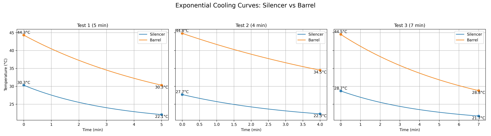

Rapid Barrel Recovery
Directional airflow pushes cool air straight down the bore, stripping heat soak and stabilizing Point of Impact (POI) faster than passive cooling alone.
ThermoX is a compact, field-ready rifle barrel cooler engineered for high-volume shooters, precision competitors, and tactical professionals who can’t afford heat-induced flyers.
Range mode: perfect for zeroing days and casual sessions where you don’t want to babysit a hot barrel.
R1250 ZAR
In Stock · Ready to ship
Every detail of ThermoX is tuned for shooters who burn ammo, not time.
Directional airflow pushes cool air straight down the bore, stripping heat soak and stabilizing Point of Impact (POI) faster than passive cooling alone.
Compact profile slides into your range bag and charges from any USB‑C pack or wall adapter.
Smart airflow design keeps the fan quiet, so target impacts stay loud and clear.
Rugged 3D-printed polymer body engineered with reinforced structures, tactile grip surfaces, and sealed electronics for harsh range environments.
ThermoX pulls cool ambient air in through the intake, pushes it through a high‑CFM turbine, and directs that airflow straight into your chamber or down the bore. This speeds up how fast the steel can dump heat.
Works with most modern AR and precision rifle platforms that have a clear path to the chamber or bore.
Cool air is pulled in, driven by the fan, and pushed directly into the barrel to strip heat.

Real feedback from the line.
“Barrel temps drop fast enough that I’m not killing time between groups anymore. My data is way more consistent.”
“Perfect for training days. Keeps my duty rifle from cooking while I’m running students through drills.”
“Small, tough, and actually useful. Lives in my range bag now.”
Yes. ThermoX uses ambient air with controlled flow rates. There are no chemicals, no contact with rifling, and no extreme temperature swings.
ThermoX is optimized for modern rifles in .223 / 5.56 and .308 / 6.5 / .338 class calibers. Adapters can be used for other popular calibers.
Yes. It’s designed to be quiet and low‑profile, perfect for indoor ranges or training spaces.
We stand behind ThermoX with a 3-month limited warranty and lifetime support.
Real strings. Real mirage. See how fast ThermoX gets you back on target.